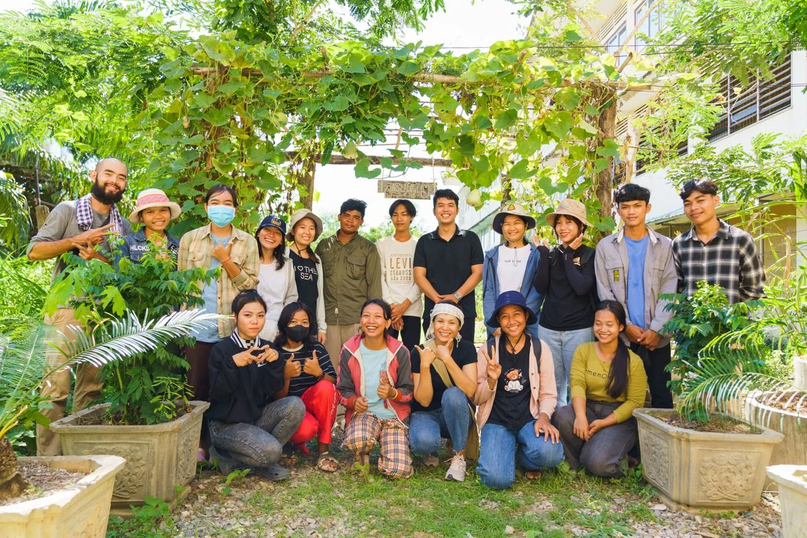
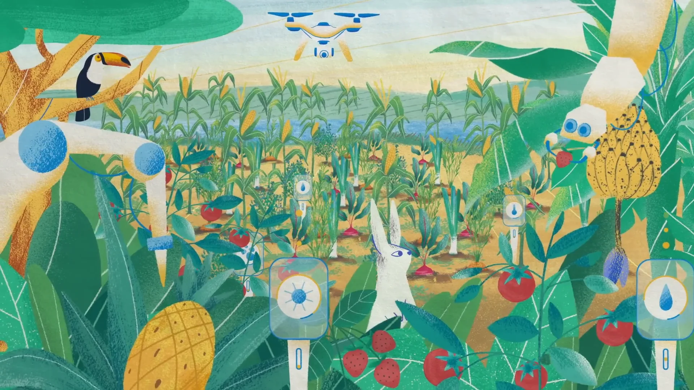
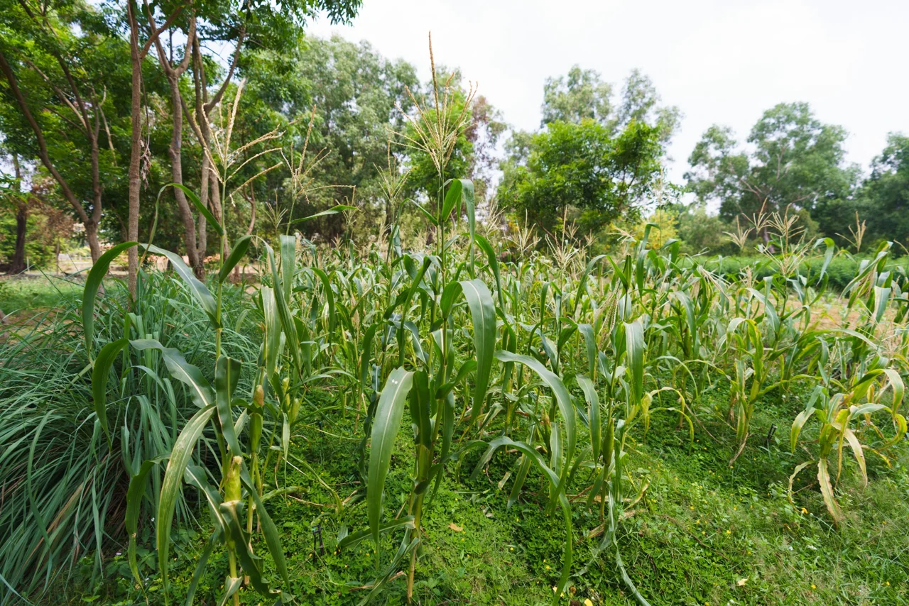
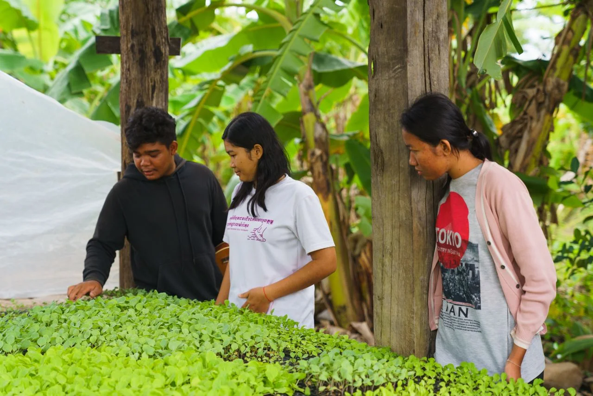
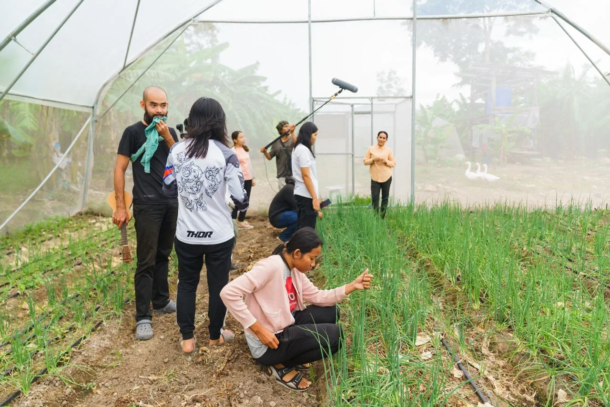

Flagship initiative
Awakening Young Farmer
Growing the next generation of regenerative farmers through practical learning, enterprise, and community.
Explore the initiativeWe connect young people, farmers, and ideas to build meaningful livelihoods in harmony with nature.

We are a Cambodian regenerative agriculture and social entrepreneurship initiative. We bring together farming, practical learning, research, and storytelling—with rural youth and smallholder farmers at the center.
Get to know DassatekConnect practical farming with the skills, confidence, and business models that support lasting livelihoods.
02Explore farming that works with ecological processes and brings soil, food, and livelihoods into the same picture.
03Learn by doing through demonstration gardens, field visits, hands-on experiences, and shared reflection.
04Explore affordable, locally relevant tools and farming models through practical experimentation.
05Make farming visible through Khmer podcasts, youth stories, field learning, and accessible resources.
From our first youth gardens
to new possibilities in agroforestry.

Growing the next generation of regenerative farmers through practical learning, enterprise, and community.
Explore the initiative
An upcoming agroforestry pilot in Kampong Thom, exploring livelihoods that help keep ancestral forests standing.
Discover the ideaDocumented milestones from the
YSEALI-supported phase.

Global ideas meet local experience. Explore resources that help us ask better questions, test new approaches, and learn from one another.
Explore the Knowledge HubIntroducing the questions behind Roots & Canopy, our upcoming agroforestry pilot.

Looking back at the early learning model behind Awakening Young Farmer.
Why we are connecting research, farmer experience, and Cambodian realities.
Khmer-language conversations about young people, farming, and the paths we choose.
Watch the conversations
Connect with us about partnerships, research, learning, or an idea worth exploring.